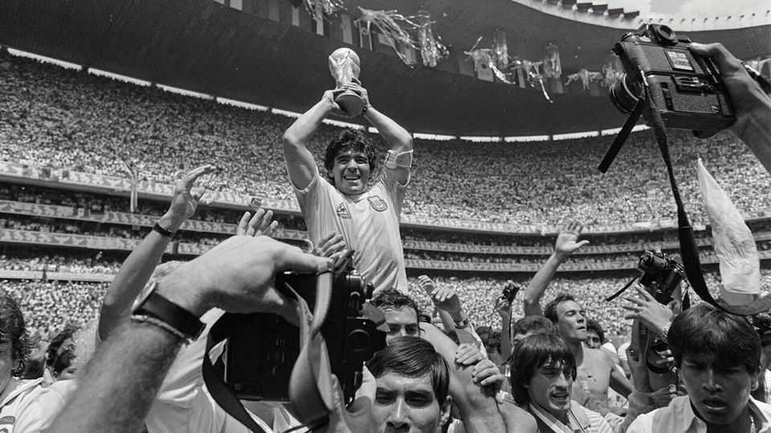

Who should win the World Cup?
It’s a better question than “Who will win?” It tells you what the tournament is for
June 11th 2026

It was too much for Ángel di María. After scoring in the World Cup final in 2022, the Argentine forward burst into tears. It was too much for Gonzalo Montiel. Having hit the winning penalty in the shoot-out—so becoming immortal—he pulled off his national shirt and buried his face in it. And it was almost too much for Argentina itself: when around 4m people thronged Buenos Aires for the victory parade, the team had to abandon their bus and wave from a helicopter.
For players and fans, even whole countries, winning the World Cup is a secular rapture. One team and nation will experience that euphoria at the climax of this year’s competition, which begins on June 11th. A lot of ink and airtime will be expended on predicting who the champions will be. But a better question than who will win the World Cup is: who should win? Answer that, and you know whom to back when your home team is knocked out. To do so, you first have to grasp the tournament’s true purpose.
The World Cup is a branch of international relations. It is an expression of power by the hosts—this year America, Canada and Mexico—and a form of soft diplomacy. The draw can throw up grudge matches that are benign alternatives to war (such as, in 2022, Iran v America) and pair nations which ordinarily have little to do with one another (this time, for example, Cape Verde v Saudi Arabia). It helps supporters everywhere see what they have in common, starting with a shared devotion to watching 22 men chase a ball.
But for enthusiasts, the newsy headlines—about overpriced tickets, alleged corruption or sports-washing autocrats—are not the real story. The World Cup is only superficially a pageant for the powerful; underneath it is a tacit conspiracy against them. For a month or so every four years, football nuts around the globe sneakily tune in to games on the job, knock off early to binge more matches and let the children stay up for late kick-offs. No overlord, whether company boss or authoritarian ruler, can forbid this pleasure.
The World Cup is a machine for memories, both evoking and making them. As with A-list assassinations, veteran fans remember where they watched their side’s greatest feats and most painful defeats, and with whom—from lost parents to absent friends and offspring who have since grown up. Each has their own personal squad of World Cup ghosts.
Above all, the World Cup is a quadrennial festival of hope. Fans hope for an injury-time miracle, the salvation of an offside flag and a distraction from humdrum woes. They hope decades of failure will at last be redeemed, and that history needn’t be destiny. Teams can embody hope for a different future, like the Argentina side led by Diego Maradona (pictured) that prevailed in 1986, not long after its military dictatorship ended. Shock victories by underdogs give hope that the meek may indeed inherit the Earth.
Global communion; indelible drama; a redemption arc; the subversive sense that anything is possible: with these goals in mind, who ought to win this World Cup? Realistically, half or more of the 48 competing teams have no chance at all. Discard those (even thought experiments have limits). Next, for fairness and excitement, ditch the eight countries that have won before (yes, even England, whose sole triumph was 60 years ago). That eliminates most of the favourites. Of the rest, the leading candidates fall into two categories.
The first group are plucky small countries with the talent to beat the population odds. As Simon Kuper writes in his delightful memoir, “World Cup Fever”, the tournament offers a topsy-turvy global hierarchy in which America “is an also-ran and China doesn’t even figure”. His team, the Netherlands, is a smallish nation that has reached three finals and has a fighting chance this time. Then again, as Mr Kuper acknowledges, the Netherlands is already a happy, successful place; it has no deep need or neurosis for football to dispel.
In its 35 years as an independent state, Croatia—population: under 4m—has astonishingly reached three semi-finals. As Aleksandar Holiga, a Croatian journalist, puts it, football is a rare field in which his country can say, “We are among the best in the world.” On balance, though, the most deserving tiddler is Portugal, which has achieved less and waited longer, while enduring dictatorship and economic malaise. “Portugal is an obsessed country,” Miguel Pereira, a football writer, says of its fixation with the sport. In a place that has produced great players but not a world-beating team, winning would spark “ecstasy and joy”. (It might also make Cristiano Ronaldo, a preening superannuated megastar, even more insufferable.)
The other worthy group comprises larger, football-loving countries that have always fallen short. Japanese fans, for instance, still mourn “the devastation of Rostov” of 2018, when their side surrendered a 2-0 lead against Belgium, and “the agony of Doha” in 1993, when a late Iraqi goal kept them out of the tournament. The team’s evolution has reflected Japan’s integration with the world, reckons Dan Orlowitz, a journalist based there. “It would be massive” if it won. Disqualifyingly, however, baseball, not football, is the country’s biggest sport. (America is ineligible on similar grounds.)
No African country has won a World Cup. Senegal, one of Africa’s strongest contenders, is mired in the political fallout of a debt crisis. But, says Elimane Ndao, a correspondent with France 24, “Whenever the national team plays, everyone forgets the political problems.” Its most cherished World Cup moment was a 1-0 defeat of France, the former colonial power, in 2002; the scorer led the team in a dance at a corner flag. If it won, the country would celebrate “for a week—or a month”.
Then there is Morocco, which four years ago reached the semi-finals. That enhanced its reputation, says Samir Bennis, a political adviser and co-founder of Morocco World News, showing the country “can shine on the world stage”. When the team is playing, “life in Morocco freezes,” says Mr Bennis. “Everyone is watching and praying for victory.” But it might be even sweeter for Africa’s apotheosis to come in 2030, when Morocco is among the hosts.
All in all, Latin America is where a first-time victory would bestow the greatest happiness on the greatest number. Colombia is in the middle of a fraught presidential election; football is “the main unifying factor in the country”, says Ricardo Ávila of El Tiempo, a daily. But winning would mean most in Mexico, a soccer-mad country of 133m. “We all believe in Our Lady of Guadalupe,” jokes León Krauze, a columnist and podcaster, “but our one true religion is football.” For millions of Mexicans in America, he notes, the team is a last link to their homeland. Winning “would do wonders for a country that has faced many hardships”, including excoriation by Donald Trump. Imagine him presenting the trophy to Mexico’s captain.
“The intensity of emotion”, recalled Pelé, a three-time champion, of seeing Brazil lift the cup, “was like nothing I had ever known.” Who will feel it this time? In reality the likeliest winners are France and Spain. Still, like past favourites, they may be undone by a dud referee or a scuffed penalty kick. For poetic justice and maximum drama, in the World Cup final on July 19th, Mexico would play—and beat—Portugal. It might happen. Until the whistle blows, we can all hope. ■